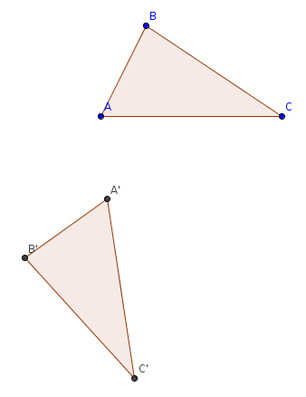

| Choisissez votre langue ! | Choose your language ! |
Définition
Definition
définition 1
On dit qu'une isométrie d'un espace affine est un
'déplacement'
ou encore une
'isométrie positive'
si l'application linéaire associée est .
definition 1
We say that an isometry of an affine space is a
'proper isometry'
or else a
'positive isometry'
if the associated linear map is .
propriété 1
Les déplacements sont donc les isométries qui conserve l'orientation des repères orthonormés.
property 1
The proper isometries are thus the isometries which preserve the orientation of the orthonormal frames.
Exemples
- L'application identique est un déplacement.
- Les translations sont des déplacements.
- Dans le plan une symétrie centrale est un déplacement.
- Dans l'espace à 3 dimensions une symétrie centrale n'est pas un déplacement.

Deux triangles isométriques superposables par déplacement

Deux triangles isométriques non superposables par déplacement dans le plan.

Examples
- The identical application is a proper isometry.
- Translations are proper isometrys.
- In the plane, a point reflection is a proper isometry.
- In 3-dimensional space a point reflection is not a proper isometry.
Two isometric triangles superimposable by proper isometry
Two isometric triangles that cannot be superimposed by any plane proper isometry
Déplacements interactifs
Translations
Avec l'application suivante, vous pouvez faire varier le vecteur de translation (d'origine O) en tirant son extrêmité.Le translaté du quadrilatère ABCD est le quadrilatère A'B'C'D'.
Vous pouvez également faire varier chacun des 4 sommets.
Interactive proper isometries
Translations
With the following application you can vary the translation vector (origin O) by dragging its end.The translate of quadrilateral ABCD is quadrilateral A'B'C'D'.
You can also vary each of the 4 vertices.
Rotations
Avec l'application suivante vous pouvez faire varier le vecteur u d'origine O qui détermine l'angle α de la rotation.Le quadrilatère A'B'C'D' est l'image du quadrilatère ABCD par la rotation de centre O et d'angle α.
Vous pouvez également déplacer chacun des 4 sommets A,B,C,D.
Rotations
With the following application you can vary the vector u of origin O which determines the angle α rotation.Quadrilateral A'B'C'D' is the image of quadrilateral ABCD by the rotation with center O and angle α.
You can also move each of the 4 vertices A,B,C,D.
Groupe des déplacements
Il résulte de la définition que :Group of proper isometries
It follows from the definition that:propriété 2
La composée de deux isométries positives est une isométrie positive. L'isométrie réciproque d'un déplacement est encore un déplacement.
property 2
The composite of two proper isometries is still a proper isometry.
De là on conclut que :
From this we deduce that :
propriété 3
Les déplacements forment un sous-groupe noté Is+(A) du .
property 3
The proper isometries are a subgroup denoted Is+(A) of .
|
Création Gilles Dubois
Created by Gilles Dubois
|
Janvier 2022
January 2022
|
Version mobile Jquery
Mobile Jquery version
|
|